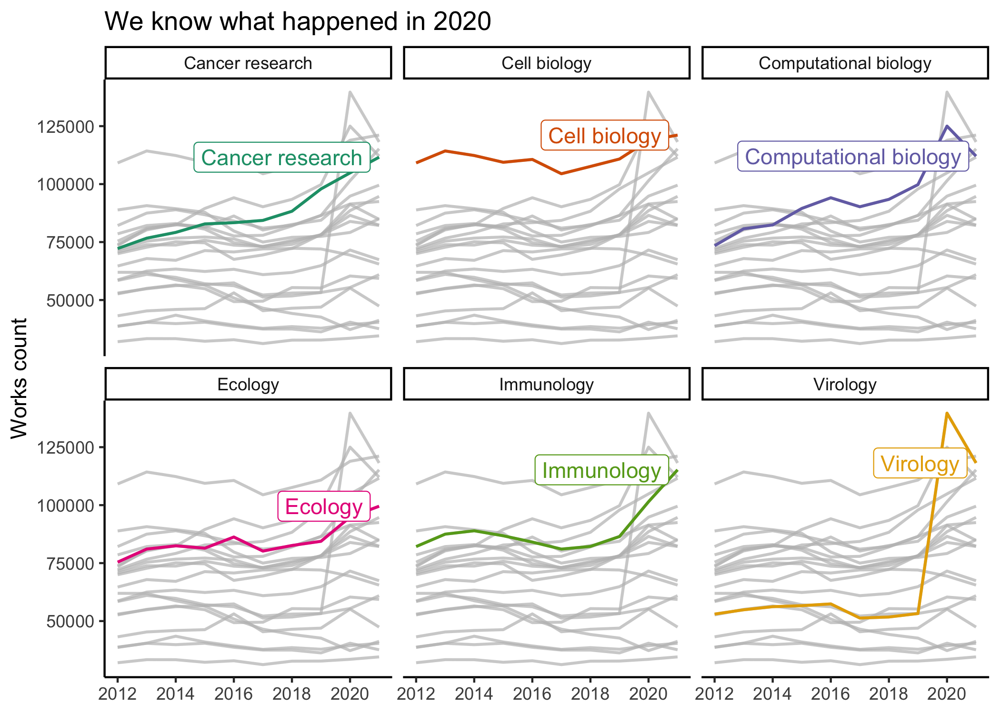
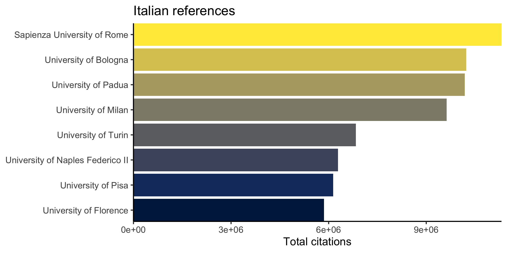
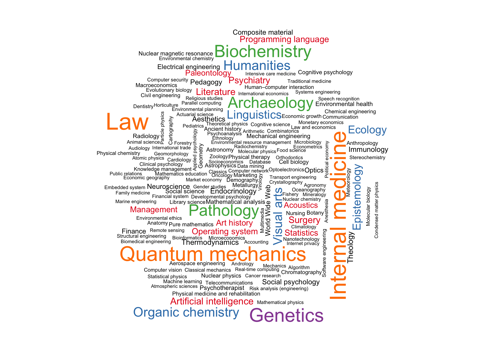
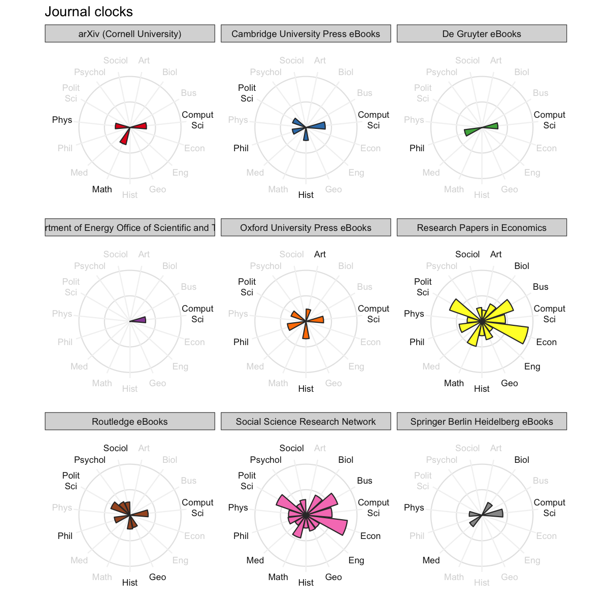
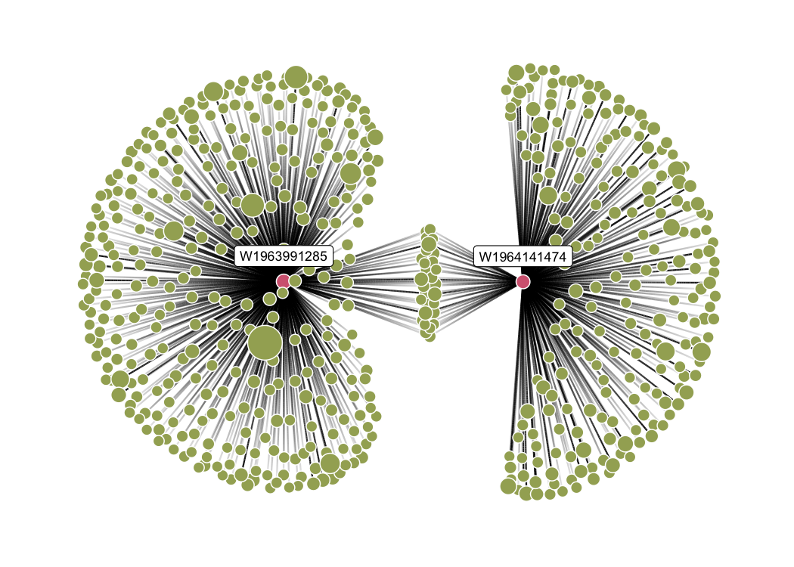

openalexR helps you interface with the OpenAlex API to retrieve bibliographic infomation about publications, authors, venues, institutions and concepts with 5 main functions:
oa_fetch: composes three functions below so the user can execute everything in one step, i.e.,oa_query |> oa_request |> oa2dfoa_query: generates a valid query, written following the OpenAlex API syntax, from a set of arguments provided by the user.oa_request: downloads a collection of entities matching the query created byoa_queryor manually written by the user, and returns a JSON object in a list format.oa2df: converts the JSON object in classical bibliographic tibble/data frame.oa_random: get random entity, e.g.,oa_random("works")gives a different work each time you run it
Setup
You can install the developer version of openalexR from GitHub with:
install.packages("remotes")
remotes::install_github("massimoaria/openalexR")You can install the released version of openalexR from CRAN with:
install.packages("openalexR")Before we go any further, we highly recommend you set openalexR.mailto option so that your requests go to the polite pool for faster response times:
options(openalexR.mailto = "example@email.com")Bonus point if you put this in your .Rprofile with file.edit("~/.Rprofile").
Examples
There are different filters/arguments you can use in oa_fetch, depending on which entity you’re interested in: works, authors, venues, institutions, or concepts. We show a few examples below.
Works
Goal: Download all information about a givens set of publications (known DOIs).
Use doi as a works filter (either the canonical form with https://doi.org/ or without):
oa_fetch(
doi = c("10.1016/j.joi.2017.08.007", "https://doi.org/10.1093/bioinformatics/btab727"),
entity = "works",
verbose = TRUE
) %>%
show_works() %>%
knitr::kable()
#> Requesting url: https://api.openalex.org/works?filter=doi%3A10.1016%2Fj.joi.2017.08.007%7Chttps%3A%2F%2Fdoi.org%2F10.1093%2Fbioinformatics%2Fbtab727
#> Getting 1 page of results with a total of 2 records...| id | display_name | first_author | last_author | so | url | is_oa | top_concepts |
|---|---|---|---|---|---|---|---|
| W2755950973 | bibliometrix : An R-tool for comprehensive science mapping analysis | Massimo Aria | Corrado Cuccurullo | Journal of Informetrics | https://doi.org/10.1016/j.joi.2017.08.007 | FALSE | Data science |
| W3206431085 | PMLB v1.0: an open-source dataset collection for benchmarking machine learning methods | Joseph D. Romano | Jason H. Moore | Bioinformatics | https://doi.org/10.1093/bioinformatics/btab727 | TRUE | Benchmarking, Python (programming language), Benchmark (surveying) |
Goal: Download all works published by a set of authors (known ORCIDs).
Use author.orcid as a filter (either canonical form with https://orcid.org/ or without will work):
oa_fetch(
entity = "works",
author.orcid = c("0000-0003-3737-6565", "0000-0002-8517-9411"),
verbose = TRUE
) %>%
show_works() %>%
knitr::kable()
#> Requesting url: https://api.openalex.org/works?filter=author.orcid%3A0000-0003-3737-6565%7C0000-0002-8517-9411
#> Getting 2 pages of results with a total of 211 records...| id | display_name | first_author | last_author | so | url | is_oa | top_concepts |
|---|---|---|---|---|---|---|---|
| W2755950973 | bibliometrix : An R-tool for comprehensive science mapping analysis | Massimo Aria | Corrado Cuccurullo | Journal of Informetrics | https://doi.org/10.1016/j.joi.2017.08.007 | FALSE | Data science |
| W2955219525 | Scaling tree-based automated machine learning to biomedical big data with a feature set selector | Trang T. Le | Jason H. Moore | Bioinformatics | https://doi.org/10.1093/bioinformatics/btz470 | TRUE | Pipeline (software), Scalability, Feature (linguistics) |
| W1979874437 | Analysis of powered two-wheeler crashes in Italy by classification trees and rules discovery | Alfonso Montella | Filomena Mauriello | Accident Analysis & Prevention | https://doi.org/10.1016/j.aap.2011.04.025 | FALSE | Crash, Identification (biology), Decision tree |
| W2952824318 | A Nonlinear Simulation Framework Supports Adjusting for Age When Analyzing BrainAGE | Trang T. Le | Tulsa Investigators | Frontiers in Aging Neuroscience | https://doi.org/10.3389/fnagi.2018.00317 | TRUE | Correlation, Mood, Contrast (vision) |
| W2408216567 | Foundations and trends in performance management. A twenty-five years bibliometric analysis in business and public administration domains | Corrado Cuccurullo | Fabrizia Sarto | Scientometrics | https://doi.org/10.1007/s11192-016-1948-8 | FALSE | Administration (probate law), Bibliometrics, Public management |
| W2281330131 | Coopetition and sustainable competitive advantage. The case of tourist destinations | Valentina Della Corte | Massimo Aria | Tourism Management | https://doi.org/10.1016/j.tourman.2015.12.009 | FALSE | Competitive advantage, Tourism, Game theory |
Goal: Download all works that have been cited more than 50 times, published between 2020 and 2021, and include the strings “bibliometric analysis” or “science mapping” in the title. Maybe we also want the results to be sorted by total citations in a descending order.
oa_fetch(
entity = "works",
title.search = c("bibliometric analysis", "science mapping"),
cited_by_count = ">50",
from_publication_date = "2020-01-01",
to_publication_date = "2021-12-31",
sort = "cited_by_count:desc",
verbose = TRUE
) %>%
show_works() %>%
knitr::kable()
#> Requesting url: https://api.openalex.org/works?filter=title.search%3Abibliometric%20analysis%7Cscience%20mapping%2Ccited_by_count%3A%3E50%2Cfrom_publication_date%3A2020-01-01%2Cto_publication_date%3A2021-12-31&sort=cited_by_count%3Adesc
#> Getting 1 page of results with a total of 45 records...| id | display_name | first_author | last_author | so | url | is_oa | top_concepts |
|---|---|---|---|---|---|---|---|
| W3160856016 | How to conduct a bibliometric analysis: An overview and guidelines | Naveen Donthu | Weng Marc Lim | Journal of Business Research | https://doi.org/10.1016/j.jbusres.2021.04.070 | TRUE | Bibliometrics, Field (mathematics), Resource (disambiguation) |
| W3038273726 | Investigating the emerging COVID-19 research trends in the field of business and management: A bibliometric analysis approach | Surabhi Verma | Anders Gustafsson | Journal of Business Research | https://doi.org/10.1016/j.jbusres.2020.06.057 | TRUE | Bibliometrics, Field (mathematics), MEDLINE |
| W2990450011 | Forty-five years of Journal of Business Research: A bibliometric analysis | Naveen Donthu | Debidutta Pattnaik | Journal of Business Research | https://doi.org/10.1016/j.jbusres.2019.10.039 | FALSE | Bibliometrics |
| W3001491100 | Software tools for conducting bibliometric analysis in science: An up-to-date review | Jose A. Moral-Munoz | Manuel Cobo | Profesional De La Informacion | https://doi.org/10.3145/epi.2020.ene.03 | TRUE | Bibliometrics, Software |
| W3044902155 | Financial literacy: A systematic review and bibliometric analysis | Kirti Goyal | Satish Kumar | International Journal of Consumer Studies | https://doi.org/10.1111/ijcs.12605 | FALSE | Financial literacy, Citation, Content analysis |
| W3011866596 | A Bibliometric Analysis of COVID-19 Research Activity: A Call for Increased Output | Mohamad A. Chahrour | Hussein H. Khachfe | Cureus | https://doi.org/10.7759/cureus.7357 | TRUE | Observational study, Gross domestic product, Population |
Authors
Goal: Download author information when we know their ORCID.
Here, instead of author.orcid like earlier, we have to use orcid as an argument. This may be a little confusing, but again, a different entity (authors instead of works) requires a different set of filters.
oa_fetch(
entity = "authors",
orcid = c("0000-0003-3737-6565", "0000-0002-8517-9411")
) %>%
show_authors() %>%
knitr::kable()| id | display_name | orcid | works_count | cited_by_count | affiliation_display_name | top_concepts |
|---|---|---|---|---|---|---|
| A923435168 | Massimo Aria | 0000-0002-8517-9411 | 131 | 3116 | University of Naples Federico II | Statistics, Internal medicine, Pathology |
| A2610192943 | Trang T. Le | 0000-0003-3737-6565 | 80 | 630 | University of Pennsylvania | Genetics, Internal medicine, Statistics |
Goal: Acquire information on the authors of this package.
We can use other filters such as display_name and has_orcid:
oa_fetch(
entity = "authors",
display_name = c("Massimo Aria", "Trang T. Le"),
has_orcid = TRUE
) %>%
show_authors() %>%
knitr::kable()| id | display_name | orcid | works_count | cited_by_count | affiliation_display_name | top_concepts |
|---|---|---|---|---|---|---|
| A923435168 | Massimo Aria | 0000-0002-8517-9411 | 131 | 3116 | University of Naples Federico II | Statistics, Internal medicine, Pathology |
| A2610192943 | Trang T. Le | 0000-0003-3737-6565 | 80 | 630 | University of Pennsylvania | Genetics, Internal medicine, Statistics |
Goal: Download all authors’ records of scholars who work at the University of Naples Federico II (OpenAlex ID: I71267560) and have published at least 500 publications.
Let’s first check how many records match the query, then download the entire collection. We can do this by first defining a list of arguments, then adding count_only (default FALSE) to this list:
my_arguments <- list(
entity = "authors",
last_known_institution.id = "I71267560",
works_count = ">499"
)
do.call(oa_fetch, c(my_arguments, list(count_only = TRUE)))
#> count db_response_time_ms page per_page
#> [1,] 27 59 1 1
do.call(oa_fetch, my_arguments) %>%
show_authors() %>%
knitr::kable()| id | display_name | orcid | works_count | cited_by_count | affiliation_display_name | top_concepts |
|---|---|---|---|---|---|---|
| A2061787601 | Luca Lista | 0000-0001-6471-5492 | 2475 | 34442 | University of Naples Federico II | Nuclear physics, Particle physics, Quantum mechanics |
| A2600338221 | Alberto Orso Maria Iorio | 0000-0002-3798-1135 | 1183 | 21245 | University of Naples Federico II | Nuclear physics, Particle physics, Quantum mechanics |
| A2011452631 | Leonardo Merola | NA | 1115 | 18805 | University of Naples Federico II | Quantum mechanics, Particle physics, Nuclear physics |
| A3113327292 | Vincenzo Canale | NA | 989 | 15199 | University of Naples Federico II | Quantum mechanics, Particle physics, Nuclear physics |
| A223517670 | Ettore Novellino | 0000-0002-2181-2142 | 962 | 17905 | University of Naples Federico II | Biochemistry, Genetics, Organic chemistry |
| A2062713547 | G. De Nardo | NA | 959 | 12481 | University of Naples Federico II | Particle physics, Nuclear physics, Quantum mechanics |
Example analyses
Goal: track the popularity of Biology concepts over time.
We first download the records of all level-1 concepts/keywords that concern over one million works:
library(gghighlight)
concept_df <- oa_fetch(
entity = "concepts",
level = 1,
ancestors.id = "https://openalex.org/C86803240", # Biology
works_count = ">1000000"
)
concept_df %>%
select(display_name, counts_by_year) %>%
tidyr::unnest(counts_by_year) %>%
filter(year < 2022) %>%
ggplot() +
aes(x = year, y = works_count, color = display_name) +
facet_wrap(~display_name) +
geom_line(linewidth = 0.7) +
scale_color_brewer(palette = "Dark2") +
labs(
x = NULL, y = "Works count",
title = "Virology spiked in 2020."
) +
guides(color = "none") +
gghighlight(
max(works_count) > 244000,
label_params = list(nudge_y = 10^5, segment.color = NA)
)
#> label_key: display_name
Goal: Rank institutions in Italy by total number of citations.
We want download all records regarding Italian institutions (country_code:it) that are classified as educational (type:education). Again, we check how many records match the query then download the collection:
italy_insts <- oa_fetch(
entity = "institutions",
country_code = "it",
type = "education",
verbose = TRUE
)
#> Requesting url: https://api.openalex.org/institutions?filter=country_code%3Ait%2Ctype%3Aeducation
#> Getting 2 pages of results with a total of 231 records...
italy_insts %>%
slice_max(cited_by_count, n = 8) %>%
mutate(display_name = forcats::fct_reorder(display_name, cited_by_count)) %>%
ggplot() +
aes(x = cited_by_count, y = display_name, fill = display_name) +
geom_col() +
scale_fill_viridis_d(option = "E") +
guides(fill = "none") +
labs(
x = "Total citations", y = NULL,
title = "Italian references"
) +
coord_cartesian(expand = FALSE)
And what do they publish on?
concept_cloud <- italy_insts %>%
select(inst_id = id, x_concepts) %>%
tidyr::unnest(x_concepts) %>%
filter(level == 1) %>%
select(display_name, score) %>%
group_by(display_name) %>%
summarise(score = sum(score))
pal <- c("black", scales::brewer_pal(palette = "Set1")(5))
set.seed(1)
wordcloud::wordcloud(
concept_cloud$display_name,
concept_cloud$score,
scale = c(2, .4),
colors = pal
)
Goal: Visualize big journals’ topics.
We first download all records regarding journals that have published more than 300,000 works, then visualize their scored concepts:
jours <- oa_fetch(
entity = "venues",
works_count = ">500000",
verbose = TRUE
) %>%
filter(publisher != "Elsevier"|is.na(publisher)) %>%
distinct(display_name, .keep_all = TRUE) %>%
select(jour = display_name, x_concepts) %>%
tidyr::unnest(x_concepts) %>%
filter(level == 0) %>%
left_join(concept_abbrev) %>%
mutate(abbreviation = gsub(" ", "<br>", abbreviation)) %>%
tidyr::complete(jour, abbreviation, fill = list(score = 0)) %>%
group_by(jour) %>%
mutate(
color = if_else(score > 10, "#1A1A1A", "#D9D9D9"), # CCCCCC
label = paste0("<span style='color:", color, "'>", abbreviation, "</span>")
)
jours %>%
ggplot() +
aes(fill = jour, y = score, x = abbreviation, group = jour) +
facet_wrap(~jour) +
geom_hline(yintercept = c(45, 90), colour = "grey90", linewidth = 0.2) +
geom_segment(
aes(x = abbreviation, xend = abbreviation, y = 0, yend = 100),
color = "grey95"
) +
geom_col(color = "grey20") +
coord_polar(clip = "off") +
theme_bw() +
theme(
plot.background = element_rect(fill = "transparent", colour = NA),
panel.background = element_rect(fill = "transparent", colour = NA),
panel.grid = element_blank(),
panel.border = element_blank(),
axis.text = element_blank(),
axis.ticks.y = element_blank()
) +
ggtext::geom_richtext(
aes(y = 120, label = label),
fill = NA, label.color = NA, size = 3
) +
scale_fill_brewer(palette = "Set1") +
guides(fill = "none") +
labs(y = NULL, x = NULL, title = "Journal clocks")
Snowball search
The user can also perform snowballing with oa_snowball. Snowballing is a literature search technique where the researcher starts with a set of articles and find articles that cite or were cited by the original set. oa_snowball returns a list of 2 elements: nodes and edges. Similar to oa_fetch, oa_snowball finds and returns information on a core set of articles satisfying certain criteria, but, unlike oa_fetch, it also returns information the articles that cite and are cited by this core set.
library(ggraph)
library(tidygraph)
#>
#> Attaching package: 'tidygraph'
#> The following object is masked from 'package:stats':
#>
#> filter
snowball_docs <- oa_snowball(
identifier = c("W1964141474", "W1963991285"),
verbose = TRUE
)
#> Requesting url: https://api.openalex.org/works?filter=openalex_id%3AW1964141474%7CW1963991285
#> Getting 1 page of results with a total of 2 records...
#> Collecting all documents citing the target papers...
#> Requesting url: https://api.openalex.org/works?filter=cites%3AW1963991285%7CW1964141474
#> Getting 3 pages of results with a total of 451 records...
#> Collecting all documents cited by the target papers...
#> Requesting url: https://api.openalex.org/works?filter=cited_by%3AW1963991285%7CW1964141474
#> Getting 1 page of results with a total of 87 records...
ggraph(graph = as_tbl_graph(snowball_docs), layout = "stress") +
geom_edge_link(aes(alpha = after_stat(index)), show.legend = FALSE) +
geom_node_point(aes(fill = oa_input, size = cited_by_count), shape = 21) +
geom_node_label(aes(filter = oa_input, label = id), nudge_y = 0.2, size = 3) +
scale_edge_width(range = c(0.1, 1.5), guide = "none") +
scale_size(range = c(3, 10), guide = "none") +
scale_fill_manual(values = c("#1A5878", "#C44237"), na.value = "grey", name = "") +
theme_graph() +
theme(legend.position = "bottom") +
guides(fill = "none")
About OpenAlex
oar-img
Schema credits: @dhimmel
OpenAlex is a fully open catalog of the global research system. It’s named after the ancient Library of Alexandria. The OpenAlex dataset describes scholarly entities and how those entities are connected to each other. There are five types of entities:
Works are papers, books, datasets, etc; they cite other works
Authors are people who create works
Venues are journals and repositories that host works
Institutions are universities and other orgs that are affiliated with works (via authors)
Concepts tag Works with a topic
Code of Conduct
Please note that this package is released with a Contributor Code of Conduct. By contributing to this project, you agree to abide by its terms.
Acknowledgements
Package hex was made with Midjourney and thus inherits a CC BY-NC 4.0 license.